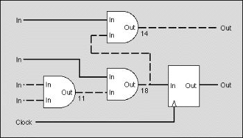
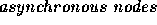
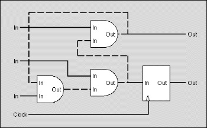
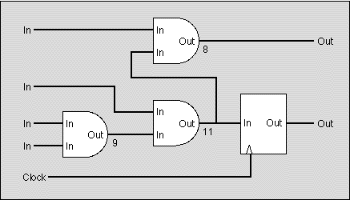

| Synchronous Design |
The designers of digital integrated circuits (IC) are very concerned about the correctness of their designs because, unlike software, ICs cannot be easily tested. Real tests are not possible until the design has been finalized and the IC has been produced.
To simulate the behavior of a digital IC and to more or less guarantee that the final chip will work, all of today's digital ICs are based on a synchronous design.

Figure: The critical path (dashed line) takes 43ns to settle
In a synchronous design, an external clock signal triggers the IC to go from a well defined and stable state to the next one. On the active edge of the clock, all input and output signals and all internal nodes are stable in either the high or low state. Between two consecutive edges of the clock, the signals and nodes are allowed to change and may take any intermediate state. The behavior of a synchronous network is predictable and will not fail due to hazards or glitches introduced by irregularities of the real circuit.
To analyze whether an IC has a synchronous design, we distinguish between synchronous and  . Flip flops are synchronous nodes. On the active edge of the clock, the output of the flip flop changes to the state of the input and holds that state throughout the next clock cycle. Synchronous nodes are connected to the clock signal.
Simple gates like ANDs or ORs are asynchronous nodes. Their output changes - with a short delay - whenever one of their inputs changes. During that transition phase, the output can even go into some undefined or intermediate state.
For simplicity, we assume that all inputs of the circuits are directly connected to the output of a synchronous node outside the circuit and that all outputs of the circuit are directly connected to the input of a synchronous node outside the circuit.
For an IC to have a synchronous design, mainly two requirements must be met:
Figure 3 shows a circuit with a synchronous design. It does not contain cycles composed of asynchronous nodes and the longest path between two synchronous nodes is shorter than the clock period of 30ns.

Figure: The design contains a cycle (dashed line)

Figure: A synchronous design
Your are to write a program that decides for a given IC whether it has a synchronous design or not. You are given a network of synchronous and asynchronous nodes, a delay for each node, some inputs and outputs and the clock period.
You may safely assume that
The input file contains several circuits. The first line gives the number of circuits in the file.
For each circuit in the file, the first line contains the clock period for the circuit, given as an integer number in nanoseconds. The next line gives the number of nodes. The following lines each contain a node, described by a letter and a integer number. The letter is 'i' for an input, 'o' for an output, 'a' for an asynchronous node and 's' for a synchronous node. The number gives the delay introduced by the node as an integer number in nanoseconds (only meaningful for an asynchronous node). Nodes are implicitly numbered, starting at zero.
After the nodes, the number of connections for the circuit follows. Each following line contains a pair of integer numbers denoting a connection between the output and the input of two nodes. The connection links an output of the node given by the first number and an input of the node given by the second number.
The clock signal is not given in the input file. We assume that all synchronous nodes are properly connected to the clock signal.
For each circuit in the input file, your output file should contain a line with one of the following messages:
<ss> should be replaced by the longest delay found on any path between two synchronous nodes.
1 30 10 i 0 i 0 i 0 i 0 o 0 o 0 a 9 a 11 a 8 s 0 9 0 8 1 7 2 6 3 6 6 7 7 8 8 4 7 9 9 5
Synchronous design. Maximum delay: 28.